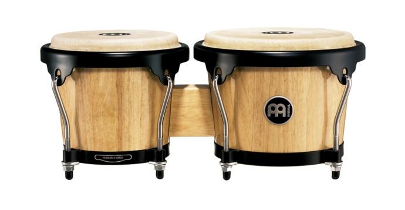

Drums
Learn about some different types of drums!
Bongos
These are a very simple drum, amde to be highly portable. They come in many different sizes.
Bass Drums
The biggest of the drums. This is often what people think of when they see a marching band, and it is true that the largest drum used in those is a bass drum. Some people use two or more in their setup. It has a definite, recognizable, booming sound.
Snare Drums
This drum has a unique sound due to the metal 'wires' that go across it, giving it a kind of 'tinny' sound.